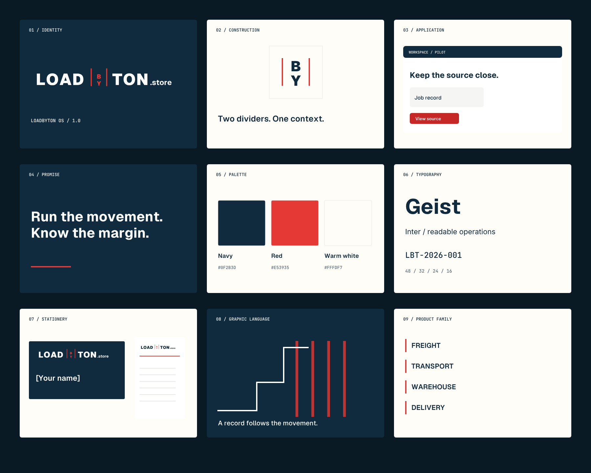

Keep the masters.
Logos are outlined SVG paths. Templates have editable text; matching outlined copies travel safely to other tools.
IDENTITY SYSTEM / VERSION 1.0
A connected visual language for the work behind the movement.
Explore the libraryLOADBYTON OS
01 / THE IDEA
Navy gives the system its structure. Red dividers connect the parent wordmark, product family and operational details. The stacked BY mark carries that identity into the smallest spaces.
Read the complete guidelines
02 / THE SYSTEM
#0F2B3D#E53935#FFFDF7Red is the identity accent. Use the darker #C62828 for small white button text; see the measured contrast report.
Movement
has context.
Readable operations.
Specific actions.
Records you can follow.
LBT-2026-001
AED 12,450.00
11 OCT 2026
03 / THE LIBRARY
Loading asset catalogue…
No matching assets. Try another term or category.
04 / THE HANDOFF
Logos are outlined SVG paths. Templates have editable text; matching outlined copies travel safely to other tools.
Use SVG on the web, PNG for social and slide software, and vector PDF for print. Print PDFs are RGB proof files with documented bleed.
Fill in real contact details, confirm fonts and copy, check the printer proof, and record the owner approval before external rollout.